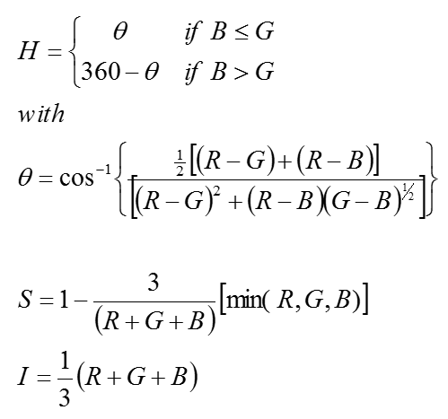

【课程】数字图像处理重点
Contents[-]
| 基于卢光明老师的讲义整理，以问题的形式回顾本课程的重点。 |
I. 什么是霍夫变换？简述其过程。

Calculating steps of hough transform:
- In parameter space, quantize $a$ and $b$, and give out ($a_{min}$).
- Set an accumulator A: A is A(amin:amax, bmin:bmax),set A to zero at the beginning.
- For a given point (xi,yi) in the original space, let a equal to each allowed values on the a-axis, and solve for the corresponding b using the equation:
- The resulting b are then rounded off to the nearest allowed value in the b-axis. If a choice of ap results in solution bq, we let A(p,q)=A(p,q)+1 At the end of this procedure, a value Q in $A_{(i,j)}$ corresponds to Q points in the xy space lying on the line y=aix+bj.
II. 列出三种颜色模型，简述其基本组成。
GRB模型:最简单的颜色模型，以三维数组存放Red,Green,Blue的颜色值。
HSI模型:反映了人的视觉系统感知彩色的方式，以色调、饱和度和强度三种基本特征量来感知颜色。

YUV模型:用于电视显示的颜色模型。Y表示亮度，$U = \frac{Red}{Green}$,$Q = \frac{Blue}{Yellow}$。单独列出亮度信号是方便兼容黑白电视。
III. 压缩率和冗余
Data redundancy is the central issue in digital image compression.
If $n1$ and $n2$ denote the number of information-carrying units in two data sets that represent the same information
The relative data redundancy $RD$ of the first data set can be defined as:
where compression ratio $CR$ is
IV. 什么是 inverse filtering ? 简述图像复原模型。
The degradation process is modeled as a degradation function that together with an additive noise term.
In frequency domain representation:
Where: $f(x,y)$ is the input image, $g(x,y)$ is the degraded image, $h(x,y)$ is the degradation function, and $\eta(x,y)$ is the additive noise.The degradation model is as shown following figure:

And the restoration model is:

From the equation above:
It tells us that even if we know the degradation function we cannot recover the undegraded image. Because $N(u,v)$ is a random function whose Fourier transform is not known.
V. Median Filtering,Average Filtering,Laplacian Filtering
中值滤波的基本思想是，把局部区域的像素按灰度等级进行排序，取该领域中灰度的中值作为当前像素的灰度值。
均值滤波:
拉普拉斯滤波: